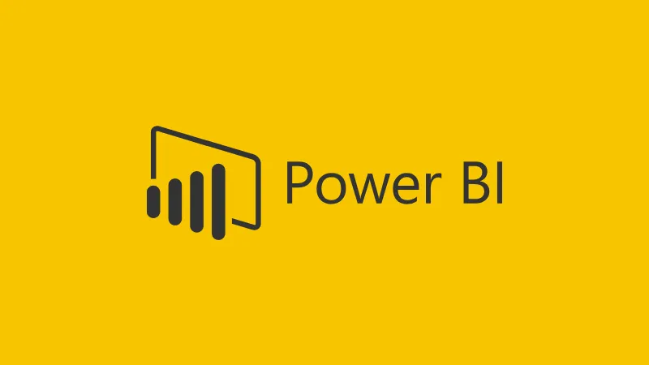
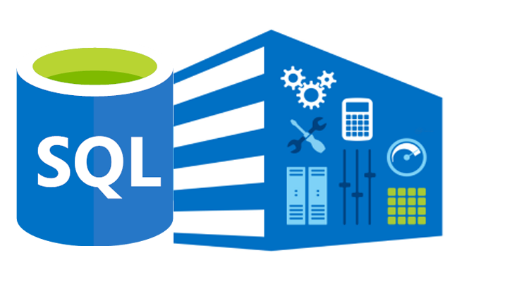
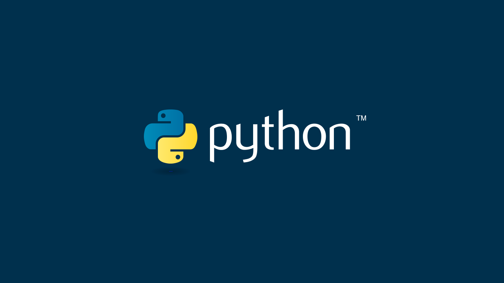

iFood — Dashboard de operações
Dashboard em Power BI para acompanhar pedidos, faturamento, lojas e entregas. Modelagem, Power Query e medidas DAX sobre a base Brazilian Delivery Center.

Dashboard em Power BI para acompanhar pedidos, faturamento, lojas e entregas. Modelagem, Power Query e medidas DAX sobre a base Brazilian Delivery Center.
Indicadores, cotações e projeções de sete empresas de tecnologia da B3. Explore o app com dados públicos da CVM, modelo estrela e cenários estatísticos.

Uma exploração de vitórias, pontos e desempenho por temporada para investigar a relação entre pilotos e equipes.

Estudo de pedidos, pagamentos, canais e entregadores com Python e consultas SQL. Análise em revisão.

Tratamento de transações, vendas por país e cliente, previsão com Prophet e estudo de churn. Análise em revisão.
Minha formação reúne Engenharia Química, Análise e Desenvolvimento de Sistemas e pós-graduações em Logística e Supply Chain Management e em Gestão Estratégica de Projetos e Metodologias Ágeis. Também curso Data Science e Analytics pela USP.
A passagem por logística, controladoria e projetos nas Lojas G, seguida pela atuação na Alltech do Brasil, trouxe uma visão integrada dos processos que hoje orienta meu trabalho com dados.
Foco em transformar dados em insights acionáveis, impulsionando a tomada de decisão e a melhoria contínua da performance dos negócios.
Ferramentas utilizadas: Excel Avançado, Ferramentas da Qualidade e Projetos e Power BI.
Para conversar sobre projetos, análises ou oportunidades: